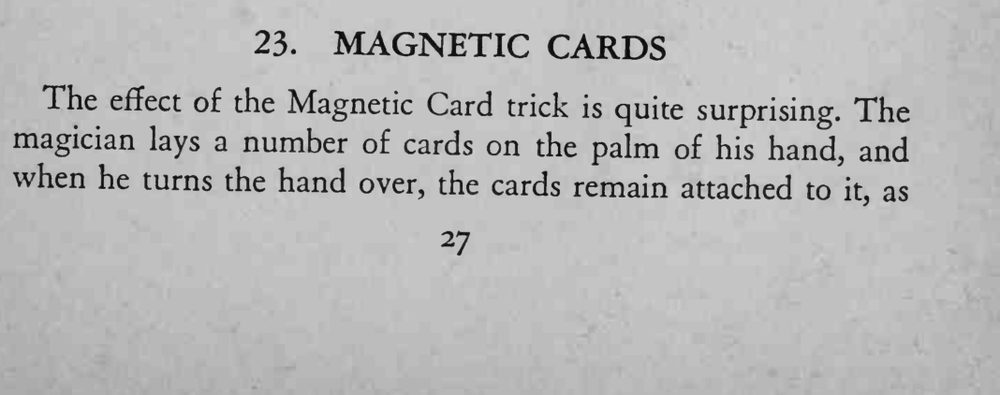
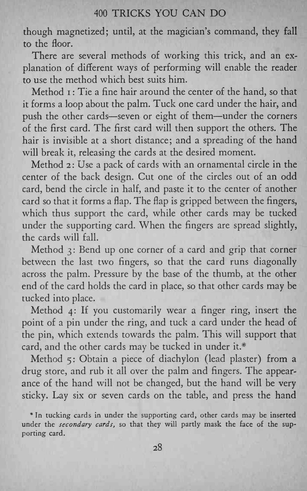
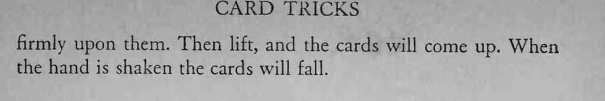

魔术师把一叠牌放在掌上，翻过手来牌也不掉，像是被磁铁吸住；一声令下，牌又全部落到地上。
无论用哪种方法，手掌都要保持自然舒展，别让观众看出用力的痕迹。



The effect of the Magnetic Card trick is quite surprising. The magician lays a number of cards on the palm of his hand, and when he turns the hand over, the cards remain attached to as though magnetized; until, at the magician's command, they fall to the floor. There are several methods of working this trick, and an explanation of different ways of performing will enable the reader to use the method which best suits him. Method i Tie a fine hair around the center of the hand, so that it forms a loop about the palm. Tuck one card under the hair, and push the other cards seven or eight of them under the corners of the first card. The first card will then support the others. The hair is invisible at a short distance; and a spreading of the hand will break it, releasing the cards at the desired moment. Method 2: Use a pack of cards with an ornamental circle in the center of the back design. Cut one of the circles out of an odd card, bend the circle in half, and paste it to the center of another card so that it forms a flap. The flap is gripped between the fingers, which thus support the card, while other cards may be tucked under the supporting card. When the fingers are spread slightly, the cards will fall. Method 3: Bend up one corner of a card and grip that corner between the last two fingers, so that the card runs diagonally across the palm. Pressure by the base of the thumb, at the other end of the card holds the card in place, so that other cards may be tucked into place. Method 4: If you customarily wear a finger ring, insert the point of a pin under the ring, and tuck a card under the head of the pin, which extends towards the palm. This will support that card, and the other cards may be tucked in under it. # Method 5: Obtain a piece of diachylon (lead plaster) from a drug store, and rub it all over the palm and fingers. The appearance of the hand will not be changed, but the hand will be very sticky. Lay six or seven cards on the table, and press the hand * In tucking cards in under the supporting card, other cards may be inserted under the secondary cards, so that they will partly mask the face of the supporting card. firmly upon them. Then lift, and the cards will come up. When the hand is shaken the cards will fall.